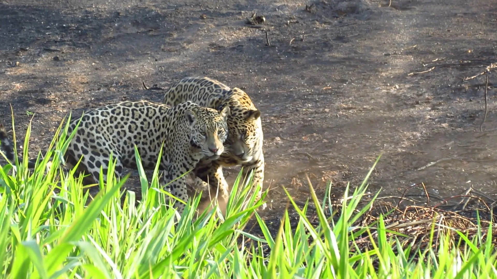

Pantanal
Northern Pantanal — Jaguar Circuit
Scene
Quiet river mornings, jaguar watching on the Cuiabá River, caiman on the banks, hyacinth macaws from the lodge deck.
Daniel's view
This gives you the strongest wildlife experience in South America without stretching the trip into the Amazon. The Northern Pantanal has the highest jaguar density in the world — I cannot promise a sighting, but the conditions here are as good as they get.